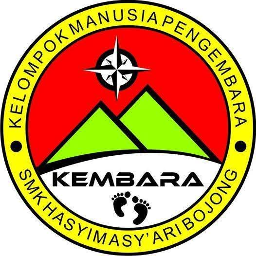

Profil Singkat
PLH KEMBARA (Pecinta Lingkungan Hidup – Kelompok Manusia Pengembara) adalah salah satu ekstrakurikuler yang berada di bawah naungan SMK Hasyim Asy'ari Bojong. Berdiri pada 10 September 2014, PLH KEMBARA didirikan oleh PA Syukron Ma'mun sebagai pembina bersama 9 perintis awal.
Berikut nama-nama 9 perintis beserta nama panggilannya:
- Alekal Hakim – “Keling”
- Adi Suprapto – “Mrepu”
- Miftakhul Ulum – “Bunyut”
- Wasilahi – “Cemong”
- Noval – “Codang”
- Andi Irmawan – “Misay”
- Yunus – “Bagol”
- Rizki – “Lanta”
- Ani – “Layung”
Visi
Menjadikan manusia yang bertanggung jawab terhadap alam dan lingkungan.
Misi
- Mewujudkan manusia yang peduli terhadap sesama manusia.
- Menjaga dan melestarikan alam agar tercipta lingkungan yang utuh.
Filosofi Logo PLH KEMBARA
- Warna Merah – Berani:
- Berani berpendapat
- Berani mengambil keputusan
- Berani menjadi pemimpin
- Warna Hijau – Kesuburan
- Warna Kuning – Kejayaan
- Warna Dasar Putih – Kesucian
- Kompas – Sebagai petunjuk arah kemana KEMBARA akan berjalan
- 2 Tapak Kaki – Simbol pengembara, bahwa setiap perjalanan harus meninggalkan jejak yang baik bagi manusia
- Logo Bulat – Melambangkan persatuan dan bumi
- 2 Lingkaran – Iman dan Taqwa
- 2 Gunung – Sebagai pedoman hidup umat Islam yaitu Al-Qur’an dan Hadist